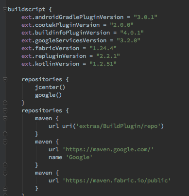

最新版本 1.2.51
1、根目录build.gradle
2、module层build.gradle
apply plugin: 'kotlin-android'
apply plugin: 'kotlin-android-extensions'
dependencies {
implementation "org.jetbrains.kotlin:kotlin-stdlib-jdk7:$kotlin_version"
}3、Xxx.kt
与Java Xxx.java主要区别在于Kotlin的文件名与类名可以不一样
class GuideKtActivity : AbsActivity() {
private var mSubscriptions: CompositeSubscription? = null
init {
mSubscriptions = CompositeSubscription()
}
override fun initView() {
val launchTime = LaunchTimeUtil.getTimeCalculate(LaunchTimeUtil.SPLASH_LAUNCH_NEXT)
TLog.i(TAG, "SPLASH_LAUNCH_NEXT success, need [%s] ms", launchTime)
if (launchTime != -1L) {
bbase.usage().record(
UserDataCollect.PREFIX_UI + UserDataCollect.SPLASH_LAUNCH_GUIDE,
launchTime)
}
super.initView()
setContentView(R.layout.layout_guide_activity)
window.setFlags(WindowManager.LayoutParams.FLAG_FULLSCREEN,
WindowManager.LayoutParams.FLAG_FULLSCREEN)
close_btn.setOnClickListener { showPermissionRequest() }
}
override fun onDestroy() {
super.onDestroy()
mSubscriptions?.clear()
}
private fun showPermissionRequest() {}
private fun launchNext(): Unit {}
private fun buildIndicatorView(selected: Boolean) = View(baseContext)
companion object {
private val TAG = GuideKtActivity::class.java.
// private const val TAG = "GuideKtActivity"
}
}基本丝滑过渡
But:
T! means “T or T?” IDE检测不出
稍微麻烦, 不够优雅
But:
只是编译时空“安全”。特别在与Java混合使用时, IDE检测不出空指针隐患
反思:
举个AhaCall的例子
//getKeyString Java源码中缺少注解@Nullable，IDE检测不出, 运行可能出现空指针
val number1 = PrefUtil.getKeyString(PrefKeys.TOUCHPAL_PHONENUMBER_ACCOUNT).trim()
val number2 = PrefUtil.getKeyString(PrefKeys.TOUCHPAL_PHONENUMBER_ACCOUNT)?.trim()
val number3 = PrefUtil.getKeyString(PrefKeys.TOUCHPAL_PHONENUMBER_ACCOUNT).trim() ?: ""小心IDE自动转码, 常出现!!
!!少用, 空指针定时炸弹
举个AhaCall的例子
使用高阶函数let
Java:
Kotlin:
when {
"apple" in items -> println("found apple")
str is String -> println("is String: $str")
else -> ""
}override fun onCreateViewHolder(parent: ViewGroup, viewType: Int): RecyclerView.ViewHolder =
when (viewType) {
R.layout.item_catagory_card -> CategoryCardViewHolder.create(parent, onLike)
R.layout.item_network_state -> NetworkStateItemViewHolder.create(parent, retryCallback)
else -> throw IllegalArgumentException("unknown view type $viewType")
}| 只读 | 可读写 |
|---|---|
| val | var (java 10支持var) |
| List | MutableList |
| Set | MutableSet |
| Map | MutableMap |
举个AhaCall的例子, data关键字
缺省值
public void share(final Context context, int style, String title, String subject, String content, Uri streamUri, String url, String imgUrl, String from){
//...
}fun share(context: Context, style: Int = 0, title: String = "", subject: String = "", content: String, streamUri: Uri, url: String = "", imgUrl: String = "", from: String){
//...
}
fun testShare() {
share(context = bbase.app(), content = "link", streamUri = "https://www.baidu.com".toUri(), from = "test")
}继承
ViewExt.kt
fun View.verticalRoundTranslate(delta: Float, duration: Long, repeatCount: Int){
val translateAnim = TranslateAnimation(0f, 0f, 0f, -delta)
translateAnim.duration = duration
translateAnim.repeatMode = Animation.REVERSE
translateAnim.repeatCount = repeatCount
val animationSet = AnimationSet(false)
animationSet.addAnimation(translateAnim)
startAnimation(animationSet)
}Kotlin:
But: Java中调Kotlin
Android KTX: androidx.core:core-ktx:1.0.0-alpha1
Java:
new Thread(new Runnable() {
@Override
public void run() {
Log.d(TAG,"do something");
}
}).start();
//java8
new Thread(() -> Log.d(TAG, "do something")).start();Kotlin:
带接受者的函数类型
let, invoke, with, apply, also, map, filter, reduce…
Java:
Kotlin:
实现饿汉式只需要
object MyClass
举个AhaCall的例子
object VoipDbHelper : SQLiteOpenHelper(bbase.app(), DATABASE_NAME, null, DATABASE_VERSION) {
override fun onCreate(db: SQLiteDatabase?) {}
override fun onUpgrade(db: SQLiteDatabase?, oldVersion: Int, newVersion: Int) {}
}
class VoipDb {
companion object {
//饿汉式
fun getInstance() = VoipDb()
//双重校验锁式, by委托,lazy延迟加载,线程安全
val instances by lazy { VoipDb() }
}
}But: Java中调Kotlin
告别findViewById
并具有View cache
Parcelable注解(实验性功能)
DSL(Domain-Specific Language, 领域特定语言)指的是专注于特定问题领域的计算机语言(领域专用语言). 不同于通用的计算机语言(GPL), 领域特定语言只用在某些特定的领域.
Gradle
build.gradle

利用嵌套闭包、扩展、函数接受者、操作符重载特性
Anko, 使用代码生成UI布局
Kolley, 封装Volley
Http.get {
url = "http://api.openweathermap.org/data/2.5/weather"
params {
"q" - "shanghai"
"appid" - "d7a98cf22463b1c0c3df4adfe5abbc77"
}
onStart { log("on start") }
onSuccess { bytes ->
log("on success ${bytes.toString(Charset.defaultCharset())}")
}
onFail { error ->
log("on fail ${error.toString()}")
}
onFinish { log( "on finish") }
}paging-rxjava2
kotlin
Thanks